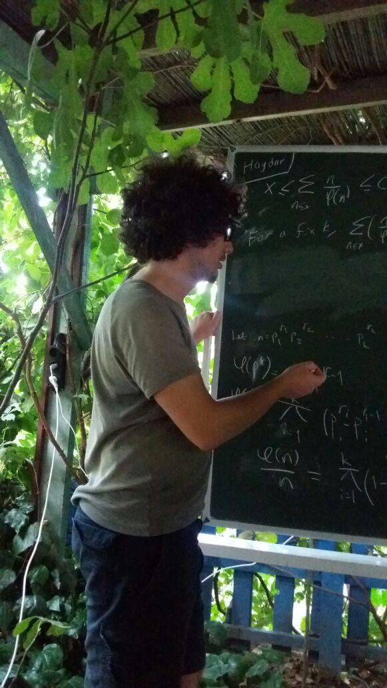

ahmet berkay kebeci
currently studying at
koç university
graduate school of sciences and engineering
mathematics
graduated from
bilkent university
department of mathematics
fields of interest are differential galois theory, scheme theory and group theory
some hobbies are mind games, nba, programming, go and orienteering
[•]
Burnside ring of a finite group
 advisor: Prof. Ergün Yalçın
bilkent university
senior project II, 2016-17 fall
abstract
advisor: Prof. Ergün Yalçın
bilkent university
senior project II, 2016-17 fall
abstract
[•]
Rubik's Cube Group
link
bahar mathematics meeting, bilkent university
sunday, oct 8, 2017
10:50 - 11:50
[•]
The Schur–Zassenhaus theorem and Hall subgroups
link
bahar mathematics meeting, mimar sinan fine arts university
saturday, mar 4, 2017
17:30 - 18:30
[•]
Burnside ring of a finite group (senior project presentation)
bilkent university
wednesday, jan 4, 2017
15:40 - 16:15
mathematics seminar room, SA-141
poster
poster 2
[•]
The Schur–Zassenhaus theorem and some corollaries
link
group theory seminar, bilkent university
monday, nov 14, 2016
15:40 - 17:30
mathematics seminar room, SA-141
poster
poster 2